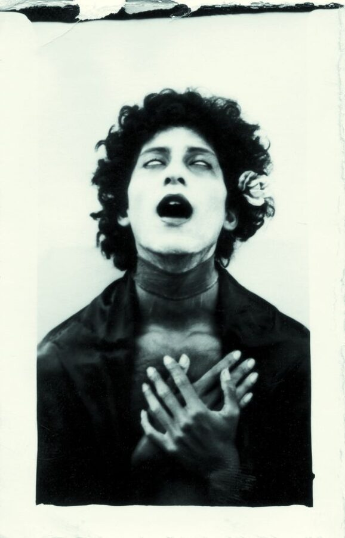

Artistas Destacados
Conoce a los creadores que están redefiniendo el arte contemporáneo.
Christian Bendayán
Pintor y curador. Su obra, llena de color vibrante, trae los mitos y la cultura de la Amazonía al centro del arte contemporáneo limeño.
Sandra Gamarra Heshiki
Artista conceptual que usa la pintura y la instalación. Su obra es muy inteligente: cuestiona el rol de los museos y la historia del arte.

Sergio Zevallos
Pionero de la performance y la fotografía en el Perú. Su trabajo explora la identidad, la política y el cuerpo de forma cruda y provocadora.